A kids' landline that lets them call one number, leave a message for you, or hear today's weather. Written to be read cold, with no prior knowledge of the app assumed.
This is the little phone system behind a kid's landline. The child has a simple corded phone (the Tin Can is the one this was built around), and it dials one number. That number rings this app, which answers in a warm, friendly voice and plays a short menu: press 1 to leave a message, press 2 to hear the weather.
It runs on a Raspberry Pi at home. The whole call speaks in a warm Deepgram Aura voice, slowed down a little so a child can follow along. When a message comes in, the Pi saves the recording, transcribes it to text, deletes it from the phone company so the Pi holds the only copy, and sends you a push notification with the transcript right there in the ping. You listen back from a small private web page that only works on your home network.
What it is not: it does not let the child dial out to other numbers, and it is not a replacement for a real phone line. It is just the friendly robot that answers when the kid calls this one number. The weather works anywhere in the world (Open-Meteo covers global forecasts). The only person who gets notified is whoever you point the notifications at.
The rest of this guide walks the two things a kid does (press 1, press 2), how the voice works, the two things you get (a notification, an inbox), where the files live, and how it is wired up.
aura-2-luna-en), slowed to 85% speed by ffmpeg so a child can follow it easily. Every prompt is synthesized once and cached on the Pi, so there is no delay during the call.pi.your-tailnet.ts.net). Devices on your tailnet (your phone, your laptop) can reach the Pi privately. The public internet cannot.When the kid picks up their phone and calls the number, the app answers and says:
"Hi there! So glad you called. Press 1 to leave a message. Or press 2 to hear today's weather!"
That is the whole menu. Press 1 and it starts recording. Press 2 and it reads the weather. Press anything else, or wait too long without pressing anything, and it says "Oops, I didn't catch that. Press 1 to leave a message. Or press 2 for the weather!" and tries again rather than hanging up, so a kid mashing buttons never gets stuck.

This is the heart of it: the "press 1 to leave mom a secret" part. After the kid presses 1, the app says:
"Okay! After the beep, tell me your message. When you're all done, press the pound key, or just hang up."
Then it beeps and records. A few things are fixed in the code and worth knowing:
Behind the scenes, once the recording finishes the Pi downloads the audio, sends it to Deepgram to transcribe, saves the audio file, deletes it from Twilio, and sends you a Pushover notification with the transcript right there in the message. The kid does not see any of that. They just leave their secret and hang up.
If transcription succeeds, the notification shows the transcript in quotes. If Deepgram heard nothing, it says "(No words were heard in this message.)". If transcription failed for any reason, it says "(Transcription failed.)". It never hides the failure or pretends it worked.
Press 2 and the app reads today's weather out loud, in plain, friendly words. It opens with the date, throws in a goofy weather line, then gives the outfit advice and any reminders, then both the morning and afternoon temperatures. Here is what a real forecast sounds like on a rainy school-day morning:
"Good morning! It's Tuesday, June 24th. Drip, drop! It's a splishy-splashy puddle day. Grab your rain boots! Today is a pants and long sleeve day. And bring your rain jacket! This morning it's about 58 degrees. And this afternoon, it'll be about 65 degrees and rainy."
The app plays that forecast twice in a row (so the child can catch anything they missed), then says "Have a great day! Bye bye!" and hangs up.

The spoken line has a fixed shape:
All of this (the outfit bands, the goofy lines for each weather type, the temperature thresholds for reminders, the school-vs-weekend distinction, and individual date overrides like holidays) lives in config/wardrobe.yml and config/day_overrides.yml. They are plain text files you can edit freely without touching any code.
The forecast data comes from Open-Meteo, a free global weather API with no account or API key required. The Pi fetches it fresh once a day at 4 a.m. and caches it so the call is instant. If the weather service is slow or unreachable when the child calls, the app says "Hmm, I can't check the weather right now. Try me again in a little while!" and hangs up.
Every word the child hears is spoken by a Deepgram Aura neural voice (currently "luna", model aura-2-luna-en). The audio is generated at normal speed by Deepgram, then slowed to 85% using ffmpeg's atempo filter (pitch is preserved; just the pace is easier to follow for a young child).

Every fixed prompt (the menu greeting, the voicemail prompt, the thank-you, the weather goodbye, and the fallback messages) is pre-generated at startup and cached on disk. During a live call, the app never waits on Deepgram; it just plays the cached file. The weather forecast text is also synthesized and cached right after the 4 a.m. weather refresh.
If Deepgram is unavailable or not configured, the app falls back to Twilio's plain built-in voice (<Say>) so the call always works. The child might notice a different voice, but they will not get silence or an error.
You get a Pushover notification on your phone for both menu choices. They arrive right after the call finishes each step.
| When | Title | What the message contains |
|---|---|---|
| A message is left | New voicemail | The caller's number, the duration in seconds, and the transcript of what they said (or a note if transcription was empty or failed). Includes a "Listen in the inbox" link to your tailnet inbox if you have a tailnet hostname configured. |
| Someone checks the weather | Weather check | The caller's number followed by the full text the child heard (the same forecast that was read aloud). A little heads-up that a kid is using the phone, plus the exact forecast so you know what they were told. |
Both notifications are best-effort. If Pushover is down, or you have not set it up yet, the recording is still saved and the caller's experience is completely unchanged. A failed notification never breaks a call or a recording.
The inbox is a small web page that lists every message newest-first, each with a play button right there in the row. You open it at http://<your-pi-tailnet-name>:8080/ from your phone or laptop.
The important part is privacy. The same Pi answers the public phone traffic and serves this private inbox, but the inbox only works when you reach the Pi by its private tailnet name. If anyone tries to reach the inbox or a recording over the public web address, they get a plain "not found": not a login page, not an error, just nothing. Your kids' messages never sit on a public web page.

When a recording finishes, it takes a short journey and ends up living only on your Pi. The app downloads the audio from Twilio, saves it into a dated folder under data/recordings/, writes a row into a small SQLite database (data/ivr.db) so the inbox can list it, and then deletes the recording from Twilio. That last step matters: it keeps your costs near zero, and it means the Pi holds the only copy.
data/ folder to somewhere else.A few other things worth knowing about what the system does and does not store:
.env file on the Pi. It is never in the application code, never sent to Twilio, and never included in any notification.This part is for whoever runs the Pi. The full durable Raspberry Pi setup lives in DEPLOY.md; SETUP.md covers a quick laptop test. The short version is the pieces you need in place:
/call..env. Without them, everything still records; you just do not get a ping.HOST=0.0.0.0 (the included service file sets this for you). Without it the app only listens to itself and the inbox will not open from your phone, even on the tailnet. The Host gate still keeps it private.

.env| Setting | What it is for |
|---|---|
TWILIO_* | Your Twilio account credentials and phone number. |
BASE_URL | The stable public address (a named Cloudflare tunnel) Twilio calls back to. |
TAILNET_HOSTNAME | The Pi's private tailnet name. The inbox only serves requests that arrive on this hostname. |
DEEPGRAM_API_KEY | Your Deepgram key for voice synthesis and transcription. Leave blank and the app falls back to Twilio's built-in voice with no transcription. |
DEEPGRAM_TTS_MODEL | Which Aura voice to use. Defaults to aura-2-andromeda-en; the deployed voice is aura-2-luna-en. |
SPEECH_RATE | Playback speed for synthesized audio. 1.0 is normal; 0.85 is the deployed value (slowed for a child). Requires ffmpeg when not 1.0. |
PUSHOVER_TOKEN, PUSHOVER_USER | Where your notifications go. Leave blank and notifications are simply skipped. |
WEATHER_LAT, WEATHER_LON, WEATHER_PLACE_NAME | Your home coordinates and the spoken place name for the forecast. Leave blank and press 2 politely says it cannot get the weather. |
DEEPGRAM_TTS_MODEL and SPEECH_RATE in your .env file. The goofy weather lines and outfit advice live in config/wardrobe.yml, a plain text file you can edit freely. After changing the voice or speed, restart the app so it re-synthesizes the cached prompts.config/day_overrides.yml. School-day and weekend outfit bands are slightly different; the weekend bands are a little more casual.config/wardrobe.yml under schedule). It also refreshes once at startup when the app boots, so a freshly restarted Pi does not serve stale weather. If the child calls between midnight and 4 a.m., they will hear yesterday's cached forecast.Companion guide to the Family Call Center. If it behaves differently from this guide, the code is the source of truth.